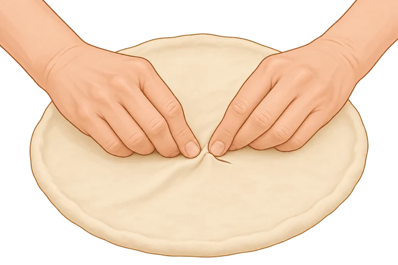
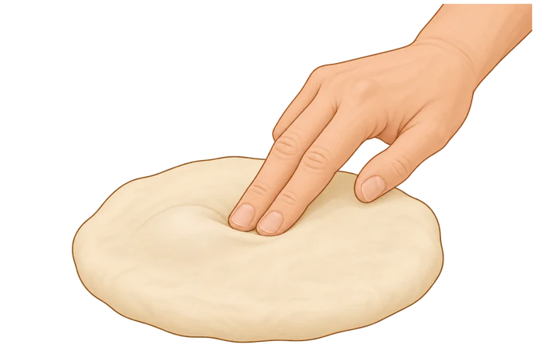
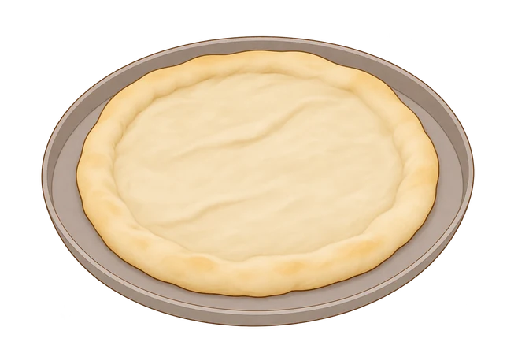
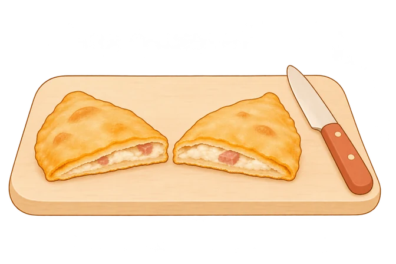

01 · Problemi e soluzioni · P02
Chiudere un piccolo strappo

Se si apre un piccolo buco, avvicina e pizzica i bordi per richiuderlo. Poi copri il panetto e lascialo riposare prima di riprovare.02 · Problemi e soluzioni · P08
Premere delicatamente le bolle grandi

Prima della stesura, premi delicatamente le bolle più grandi del panetto. Negli stili con cornicione, lascia il bordo libero dalla pressione.03 · Problemi e soluzioni · P09 / P18
La base prima del condimento

Una base precotta, ancora senza condimento. Quando la ricetta prevede la precottura, aggiungi il topping e completa la cottura secondo il metodo.04 · Problemi e soluzioni · FR01
Controllare anche l’interno del fritto

Apri un pezzo di prova e controlla anche l’impasto all’interno: il colore esterno, da solo, non basta. Per i pezzi successivi, segui la temperatura prevista dalla ricetta.